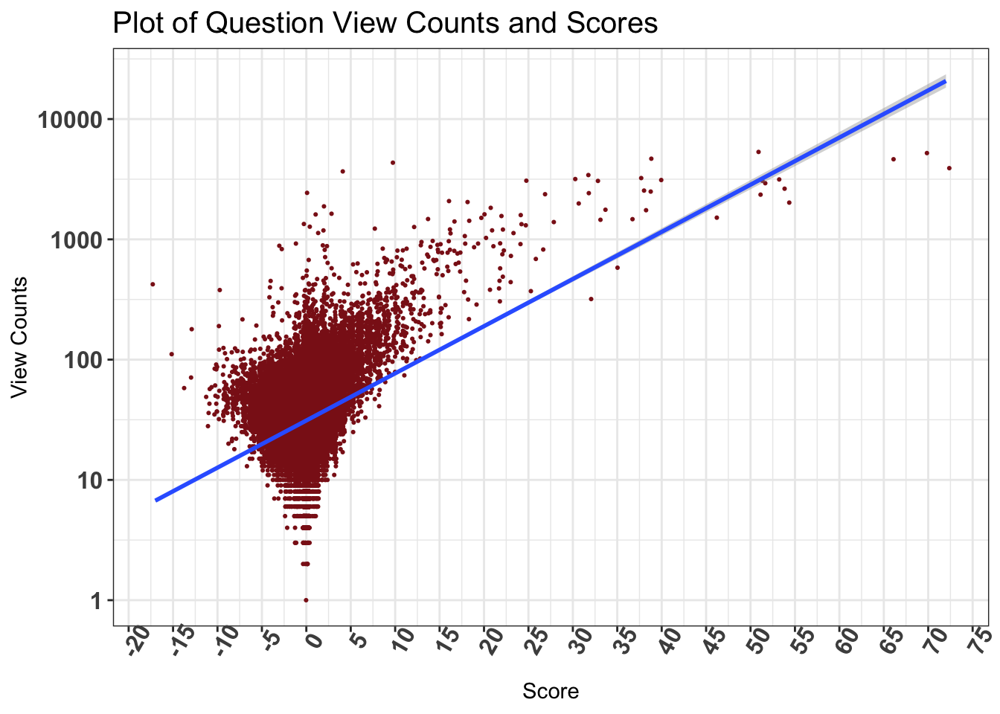

Associations
This section consists of some correlation that were discovered in the data as a part of the Exploratory Data Analysis.
Correlation between different Features of the Questions
The highest correlation can be seen between favorite count (where users mark it as a bookmark) and scores. However these correlations are suggestive of a small part of stack overflow data. On a larger representative data, we might be able to get actual correlations.
Association between Scores and Tags :
The score feature was converted into a categorical feature by converting numbers < 0 to negative, > 0 to positive and 0 to neutral. Then a Chi-Square test was performed to determine if there is any significant dependence between tags and scores.
Null Hypothesis: The Score for a question is independent of the Tag.
Alternate Hypothesis: The Score and Tag for a question are not independent.
A Chi-Square test statistic of 2283.065 and a p-value of < 0.00001 were obtained. Thus we can reject th null hypothesis and suggest that the score for a question is dependent on its Tag.
The following visual shows the amount of correlation between the category of scores and each tag.
To further understand the results of the Chi-Square test, the residuals are plotted in the table below.

Interpretation: The large circle indicate the sections where the Observed value differs greatly from the Expected value. For example, for the tag python, the Observed number of questions with positive scores was significantly greater than the Expected. Similarly, for the tag R, the Observed number of negative scores was significantly lower than the Expected.
The table below show the actual numbers of the Chi Square test residuals.
An example interpretation is C shows a positive association to negative scores meaning C questions tend to obtain negative scores more often than not. This could also indicate C questions are complex to understand or rather old and an answer might already be there in the platform.
View Counts v/s Scores for Questions

The plot is suggestive of a postive correlation between the scores and views of questions. There could be a causal relationship between these two as well. High scored questions may appear in Google searches more often, and in turn get more views.